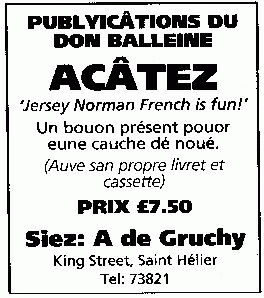

À ches drein nou-s'a encouothagi la boutiqu'sie dans les démnîns d'Jèrri à seule fîn d'souôt'nîn l'êcononmie d'l'Île. Tout coumme, y'a ieu des pliaintes viyant qu'les Êtats atout lus politique dé taxe né donnent pon d'l'avantage ès conmèrces d'ichîn mais sembl'yent d'mander ès gens d'Jèrri d'payi la TBS (qu'i' n'avaient pon voté pouor, pouor c'menchi) et d'èrnonchi la boutiqu'sie en lîngne et l'împortâtion d'produits sans taxe. Et l'dèrnié ridgeu ch'est d'vaie la Poste dé Jèrri à lanchi un sèrvice pouor l'împortâtion d'acats c'mandés en lîngne pouor faithe la compétition d'auve les boutiques dé Jèrri. Lé publyi, pouor en dithe lé vrai, est dans la bliâse.

Pouor nos dgider hors d'la bliâse, y'a la "main învisibl'ye". S'lon l'êcononmiste Êcôssais du dgiêx-huitchième siècl'ye, Adam Smith, si l's acateurs sont libres et les producteurs n'sont pon embrontchis nitout, i' lus en vont înclyinner à un êtchilibre d'lus întéthêts tchi s'sa avantageux pouor tous - mais chenna sans l'saver ou l'vouler, coumme s'i' 'taient dgidés par eune main învisibl'ye. S'lon chutte théorie du libéthalisme cliâssique, lé d'si d's acateurs pouor des bouôns produits à bas prix et la compétition entre les producteurs et entre les vendeurs dévthaient offri d'la valeu à tous. Mais en Jèrri, iun des problièmes ch'est si les boutitchièrs n'peuvent pon baîssi les prix pouor la compétition si lus louages sont haûchis par l'înfluence des finnances.
En mil neu chents souaixante-huit, l'êcologiste Améthitchain Garrett Hardin publyit eune articl'ye entouor la "tragédie des c'meunes" tchi dêcrivit la situâtion dans tchi l'întéthêt dé sé d'châtchun passecrit l'bein publyi. Înmaginnons eune c'meune. Les t'nants ont drouait d'paître lus bêtes sus la c'meune. Si les t'nants chârent lé paîsson êgalement, la c'meune tcheint bouon. Mais l'întéthêt d'un t'nant, ch'est d'ajouôter des bêtes à san troupé, car il èrchait tout l'profit d'un pus grand troupé, mais l'maûfait du paîsson appaûvri est châré entre touos les t'nants. Si la mâjorité des t'nants font d'même, la c'meune est d'sèrtée. La tragédie, ch'est qu'ch'est tréjous dans l'întéthêt d'l'îndividu d'faithe chein tchi niet à l'întéthêt c'meun.
Et en prîncipe, acater d'ichîn, ch'est chârer la c'meune - mais un acateux d'ichîn trouve s'n întéthêt dans la boutiqu'sie hors Jèrri. Où'est qu'est don not' main învisibl'ye?
Geraint Jennings
Viyiz étout: